The TikZ and PGF Packages
Manual for version 3.1.9a
Libraries
63 Three Point Perspective Drawing Library
by Max Snippe
TikZ Library perspective ¶
\usetikzlibrary{perspective} %
LaTeX
and plain
TeX
\usetikzlibrary[perspective] % ConTeXt
This library provides tools for perspective drawing with one, two,
or three vanishing points.
63.1 Coordinate Systems¶
Coordinate system three point perspective ¶
The three point perspective coordinate system is very similar to the xyz coordinate system, save that it will display the provided coordinates with a perspective projection.
/tikz/cs/x=⟨number⟩ (no default, initially 0)
The \(x\) component of the coordinate. Should be given without unit.
/tikz/cs/y=⟨number⟩ (no default, initially 0)
Same as x.
/tikz/cs/z=⟨number⟩ (no default, initially 0)
Same as x.
Coordinate system tpp ¶
The tpp coordinate system is an alias for the three point perspective coordinate system.
63.2 Setting the view¶
/tikz/3d view={⟨azimuth⟩}{⟨elevation⟩} (default {-30}{15}) ¶
With the 3d view option, the projection of the 3D coordinates on the 2D page is defined. It is determined by rotating the coordinate system by \(-\meta {azimuth}\) around the \(z\)-axis, and by ⟨elevation⟩ around the (new) \(x\)-axis, as shown below.
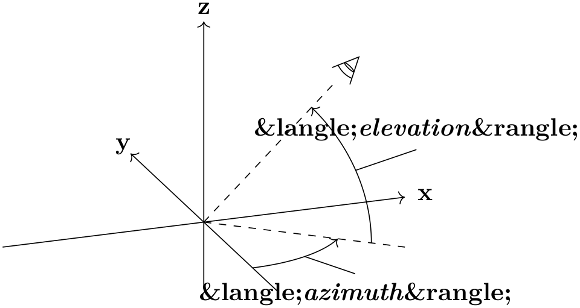
For example, when both ⟨azimuth⟩ and ⟨elevation⟩ are 0\(^\circ \), \(+z\) will be pointing upward, and \(+x\) will be pointing right. The default is as shown below.
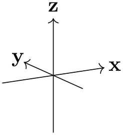
/tikz/isometric view(style, no value) ¶
A special kind of 3d view is isometric, which can be set with the isometric view style. It simply sets 3d view={-45}{35.26}. The value for ⟨elevation⟩ is determined with \(\arctan (1/\sqrt {2})\). In isometric projection the angle between any pair of axes is 120\(^\circ \), as shown below.
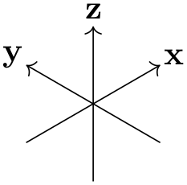
63.3 Defining the perspective¶
In this section, the following example cuboid will be used with various scaling. As a reference, the axes will be shown too, without perspective projection.
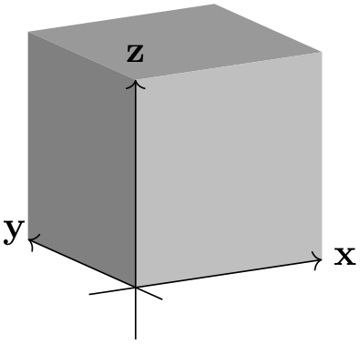
\usetikzlibrary {perspective}
\newcommand\simplecuboid[3]{%
\fill[gray!80!white] (tpp cs:x=0,y=0,z=#3)
--
(tpp cs:x=0,y=#2,z=#3)
--
(tpp cs:x=#1,y=#2,z=#3)
--
(tpp cs:x=#1,y=0,z=#3) --
cycle;
\fill[gray] (tpp cs:x=0,y=0,z=0)
--
(tpp cs:x=0,y=0,z=#3)
--
(tpp cs:x=0,y=#2,z=#3)
--
(tpp cs:x=0,y=#2,z=0) --
cycle;
\fill[gray!50!white] (tpp cs:x=0,y=0,z=0)
--
(tpp cs:x=0,y=0,z=#3)
--
(tpp cs:x=#1,y=0,z=#3)
--
(tpp cs:x=#1,y=0,z=0) --
cycle;}
\newcommand{\simpleaxes}[3]{%
\draw[->] (-0.5,0,0) --
(#1,0,0) node[pos=1.1]{x};
\draw[->] (0,-0.5,0) --
(0,#2,0) node[pos=1.1]{y};
\draw[->] (0,0,-0.5) --
(0,0,#3) node[pos=1.1]{z};}
\begin{tikzpicture}[3d view]
\simplecuboid{2}{2}{2}
\simpleaxes{2}{2}{2}
\end{tikzpicture}
/tikz/perspective=⟨vanishing points⟩ (default p={(10,0,0)},q={(0,10,0)},r={(0,0,20)}) ¶
The ‘strength’ of the perspective can be determined by setting the location of the vanishing points. The default values have a stronger perspective towards \(x\) and \(y\) than towards \(z\), as shown below.
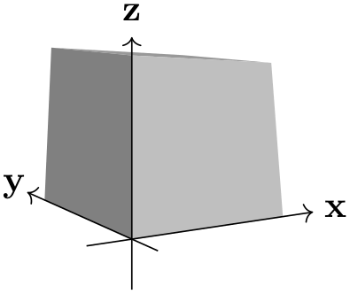
\usetikzlibrary {perspective}
\begin{tikzpicture}[3d view,perspective]
\simplecuboid{2}{2}{2}
\simpleaxes{2}{2}{2}
\end{tikzpicture}
From this example it also shows that the maximum dimensions of the cuboid are no longer 2 by 2 by 2. This is inherent to the perspective projection.
/tikz/perspective/p={⟨x,y,z⟩} (no default, initially (0,0,0)) ¶
The location of the vanishing point that determines the ‘strength’ of the perspective in \(x\)-direction can be set with the p key.
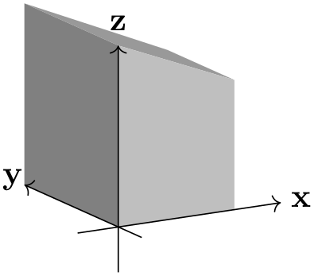
\usetikzlibrary {perspective}
\begin{tikzpicture}[
3d view,
perspective={
p
= {(5,0,0)}}]
\simplecuboid{2}{2}{2}
\simpleaxes{2}{2}{2}
\end{tikzpicture}
Note also that when only p is provided, the perspective in \(y\) and \(z\) direction is turned off.
To turn off the perspective in \(x\)-direction, one must set the \(x\) component of p to 0 (e.g. p={(0,a,b)}, where a and b can be any number and will be ignored). Or one can provide q and r and omit p.
By changing the \(y\) and \(z\) components of p, one can achieve various effects.
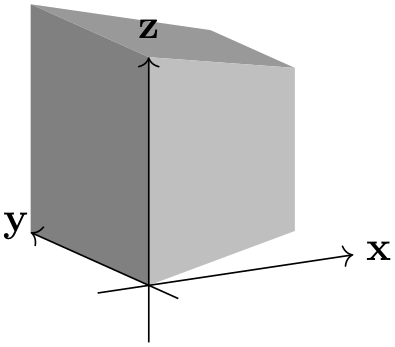
\usetikzlibrary {perspective}
\begin{tikzpicture}[
3d view,
perspective={
p
= {(5,0,1)}}]
\simplecuboid{2}{2}{2}
\simpleaxes{2}{2}{2}
\end{tikzpicture}
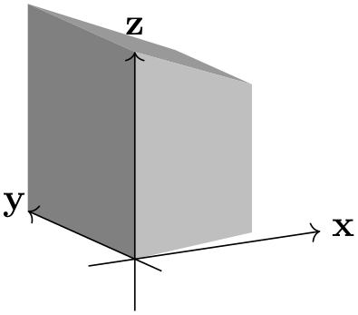
\usetikzlibrary {perspective}
\begin{tikzpicture}[
3d view,
perspective={
p
= {(5,1,0)}}]
\simplecuboid{2}{2}{2}
\simpleaxes{2}{2}{2}
\end{tikzpicture}
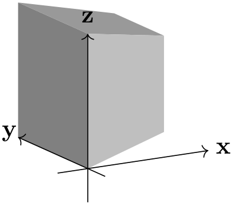
\usetikzlibrary {perspective}
\begin{tikzpicture}[
3d view,
perspective={
p
= {(5,1,1)}}]
\simplecuboid{2}{2}{2}
\simpleaxes{2}{2}{2}
\end{tikzpicture}
/tikz/perspective/q={⟨x,y,z⟩} (no default, initially (0,0,0)) ¶
Similar to p, but can be turned off by setting its \(y\) component to 0.
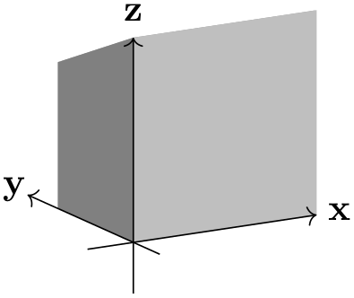
\usetikzlibrary {perspective}
\begin{tikzpicture}[
3d view,
perspective={
q
= {(0,5,0)}}]
\simplecuboid{2}{2}{2}
\simpleaxes{2}{2}{2}
\end{tikzpicture}
/tikz/perspective/r={⟨x,y,z⟩} (no default, initially (0,0,0)) ¶
Similar to p, but can be turned off by setting its \(z\) component to 0.
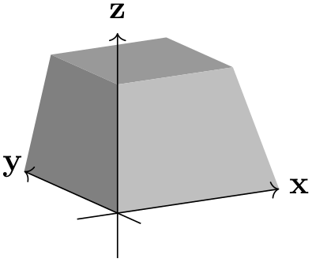
\usetikzlibrary {perspective}
\begin{tikzpicture}[
3d view,
perspective={
r
= {(0,0,5)}}]
\simplecuboid{2}{2}{2}
\simpleaxes{2}{2}{2}
\end{tikzpicture}
63.4 Shortcomings¶
Currently a number of things are not working, mostly due to the fact that PGF uses a 2D coordinate system underwater, and perspective projection is a non-linear affine transformation which needs to be aware of all three coordinates. These three coordinates are currently lost when processing a 3D coordinate. The issues include, but possibly are not limited to:
-
• Keys like shift, xshift, yshift are not working
-
• Keys like rotate around x, rotate around y, and rotate around z are not working
-
• Units are not working
-
• Most keys from the 3d library are unsupported, e.g. all the canvas is .. plane keys.
63.5 Examples¶
An r that lies ‘below’ your drawing can mimic a macro effect.
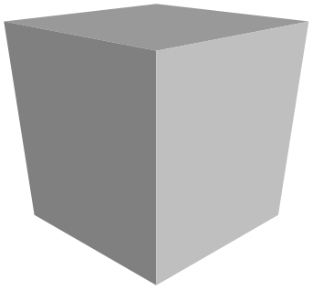
\usetikzlibrary {perspective}
\begin{tikzpicture}[
isometric view,
perspective={
p
= {(8,0,0)},
q
= {(0,8,0)},
r
= {(0,0,-8)}}]
\simplecuboid{2}{2}{2}
\end{tikzpicture}
A peculiar phenomenon inherent to perspective drawing, is that however great your coordinate will become in the direction of the vanishing point, it will never reach it.
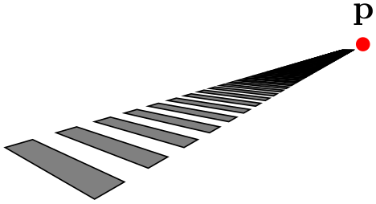
\usetikzlibrary {perspective}
\begin{tikzpicture}[
isometric view,
perspective={
p
= {(4,0,0)},
q
= {(0,4,0)}}]
\node[fill=red,circle,inner sep=1.5pt,label=above:p] at
(4,0,0){};
\foreach \i in
{0,...,100}{
\filldraw[fill =
gray] (tpp cs:x=\i,y=0,z=0)
--
(tpp cs:x=\i+0.5,y=0,z=0)
--
(tpp cs:x=\i+0.5,y=2,z=0)
--
(tpp cs:x=\i,y=2,z=0)
--
cycle;}
\end{tikzpicture}
Even for simple examples, the added perspective might add another ‘dimension’ to your drawing. In this case, two vanishing points give a more intuitive result then three would.
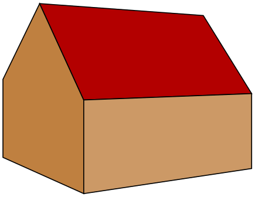
\usetikzlibrary {perspective}
\begin{tikzpicture}[
scale=0.7,
3d view,
perspective={
p
= {(20,0,0)},
q
= {(0,20,0)}}]
\filldraw[fill=brown] (tpp cs:x=0,y=0,z=0)
--
(tpp cs:x=0,y=4,z=0)
--
(tpp cs:x=0,y=4,z=2)
--
(tpp cs:x=0,y=2,z=4)
--
(tpp cs:x=0,y=0,z=2) --
cycle;
\filldraw[fill=red!70!black] (tpp cs:x=0,y=0,z=2)
--
(tpp cs:x=5,y=0,z=2)
--
(tpp cs:x=5,y=2,z=4)
--
(tpp cs:x=0,y=2,z=4) --
cycle;
\filldraw[fill=brown!80!white] (tpp cs:x=0,y=0,z=0)
--
(tpp cs:x=0,y=0,z=2)
--
(tpp cs:x=5,y=0,z=2)
--
(tpp cs:x=5,y=0,z=0) --
cycle;
\end{tikzpicture}
With the vanishing points nearby, the distortion of parallel lines becomes very strong. This might lead to Dimension too large errors.
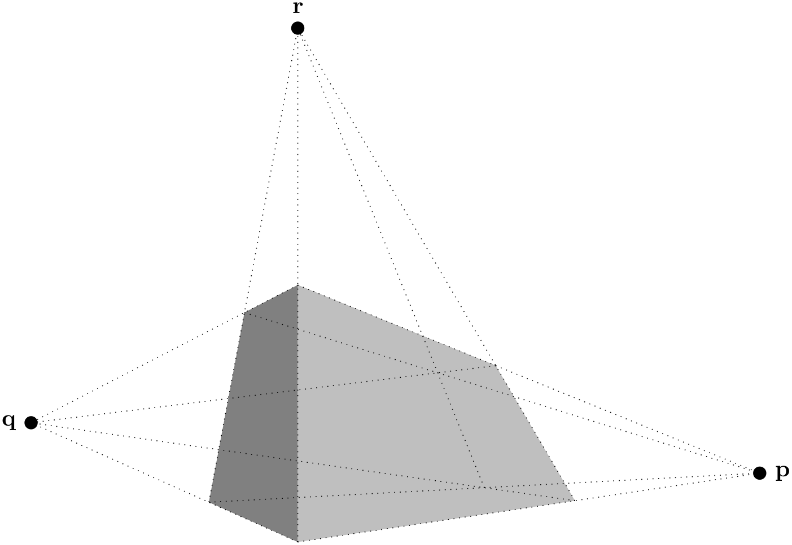
\usetikzlibrary {perspective}
\begin{tikzpicture}[
3d view,
perspective={
p
= {(2,0,0)},
q
= {(0,2,0)},
r
= {(0,0,2)}},
scale=4,
vanishing point/.style={fill,circle,inner sep=2pt}]
\simplecuboid{3}{1}{2}
\node[vanishing point,label =
right:p] (p) at
(2,0,0){};
\node[vanishing point,label =
left:q] (q) at
(0,2,0){};
\node[vanishing point,label =
above:r] (r) at
(0,0,2){};
\begin{scope}[dotted]
\foreach \y in
{0,1}{
\foreach \z in
{0,2}{
\draw (tpp cs:x=0,y=\y,z=\z) --
(p.center);}}
\foreach \x in
{0,3}{
\foreach \z in
{0,2}{
\draw (tpp cs:x=\x,y=0,z=\z) --
(q.center);}}
\foreach \x in
{0,3}{
\foreach \y in
{0,1}{
\draw (tpp cs:x=\x,y=\y,z=0) --
(r.center);}}
\end{scope}
\end{tikzpicture}